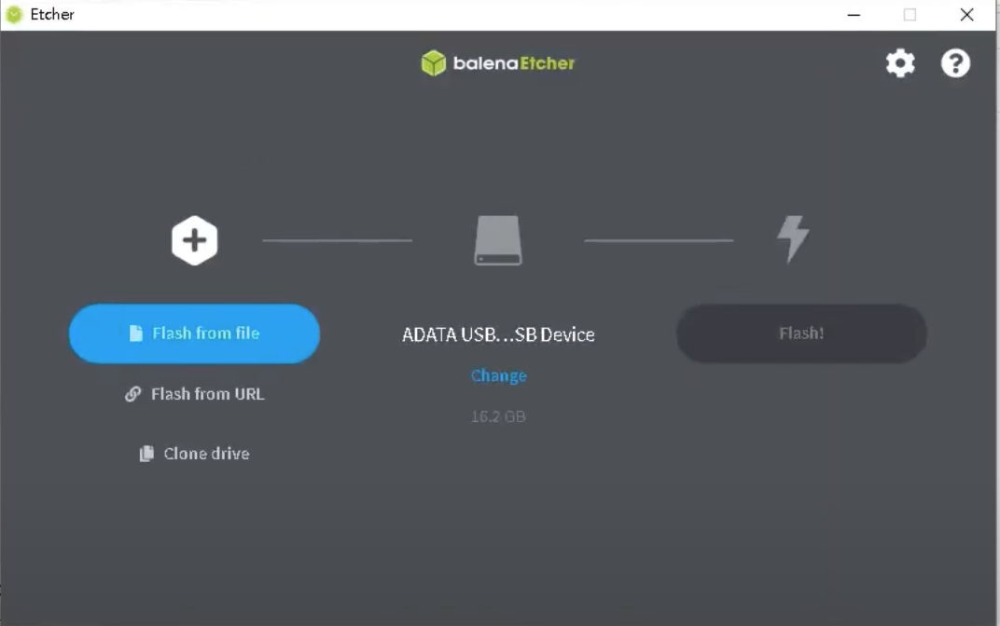
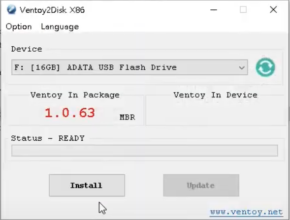
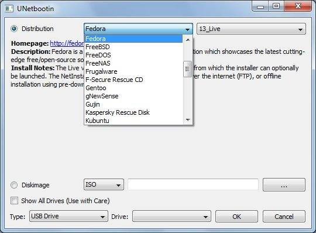

前言
把 ISO 寫入 USB 會清除目標隨身碟的資料。真正重要的不是按下「開始」，而是確認 ISO 來源、選對目標磁碟，並在完成後測試是否能正常開機。
先做這三件事
- 從官方來源取得 ISO，並比對官方提供的雜湊值。 這能降低下載損毀或被置換的風險。
- 備份 USB 內容。 寫入流程通常會格式化整支隨身碟。
- 再次確認目標磁碟。 特別是在同時接著外接硬碟時，容量與磁碟代號都要核對。
工具怎麼選
| 工具 | 適合情境 | 特點 |
|---|---|---|
| Rufus | Windows 安裝媒體與單一 ISO | 可明確選擇分割區與啟動模式。 |
| balenaEtcher | 希望介面簡單、跨平台操作 | 流程直接，適合一般映像檔寫入。 |
| Ventoy | 經常測試多個 ISO | 先安裝一次 Ventoy，之後可直接複製多個 ISO。 |
| UNetbootin | 特定舊系統或既有工作流程 | 使用前先確認目標作業系統仍受支援。 |
1. 使用 Rufus

- 插入 USB 後，在 裝置 欄位確認容量與名稱。
- 選取 ISO，依目標電腦的韌體模式選擇適合的分割區設定；不確定時，先查目標系統需求。
- 開始寫入後不要拔除 USB，完成後安全退出並實際測試開機。
2. 使用 balenaEtcher

- 選擇已驗證的 ISO。
- 選擇目標 USB，重新檢查容量。
- 執行寫入與驗證，完成前不要中斷裝置連線。
3. 使用 Ventoy

Ventoy 會先將 USB 轉為可開機媒體；完成後可把多個 ISO 直接複製到 USB，再從開機選單選擇要啟動的映像檔。
1 | # Linux 版本：解壓縮後，在 Ventoy 目錄執行 |
請先閱讀工具畫面中的磁碟資訊；安裝 Ventoy 同樣會改寫目標 USB。
4. 使用 UNetbootin

選擇 ISO 與目標 USB 後開始寫入。若要安裝的是較新的作業系統，優先採用該系統官方建議的媒體建立工具，避免因啟動模式或映像格式不相容而失敗。
完成後驗證
- 以目標電腦的開機選單測試 USB 是否可被辨識。
- 若無法開機，先確認 UEFI／Legacy 模式與 ISO 需求是否一致。
- 保存 ISO 的來源、版本與雜湊值，讓日後能重建相同媒體。